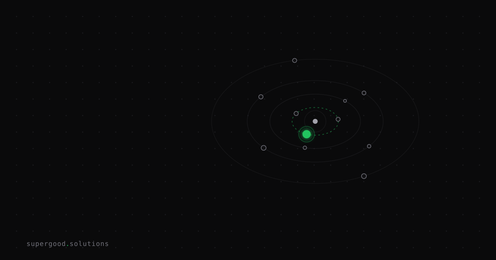

Enterprise Agents Need Pause Points, Not Just Guardrails
TL;DR: Teams spend months tuning models for production agents and ship them without wiring in mandatory human checkpoints — then wonder why a bulk edit job corrupted half their catalog. The consequential question is where the agent has to stop and ask, not which model to use.
Key Insight
Guardrails and pause points are not the same thing, and most teams conflate them.
Guardrails are filters: system prompts, output validators, content classifiers. They're reactive. They catch output the model shouldn't have produced. Pause points are architectural: explicit positions in the agent's execution graph where it must surface a proposed action to a human before continuing. They're proactive.
The difference matters because guardrails operate on what the model said. Pause points operate on what the model is about to do. For consequential operations — bulk schema changes, outbound API calls, financial transactions, mass message sends — the gap between those two is where production incidents live.
LangGraph exposes this through interrupt_before nodes. OpenAI's Agents SDK calls them approval gates. Temporal uses signal handlers on durable workflows. The pattern is the same everywhere: persist agent state, surface the proposed action with its reasoning, wait for a human decision, then resume. What varies is how many teams actually wire this in before shipping to production.
Why Teams Miss This
The demo-to-production gap bites hardest here. In demos, agents write to a sandbox with fake data, so full autonomy looks fine. In production, that same agent is modifying live records.
The failure mode is predictable: a team builds an agent that autonomously handles a task 95% correctly in testing. They ship it. The 5% it gets wrong hits 10,000 rows before anyone notices. Post-mortem says "we need better prompts." The actual fix was a single pause point before the batch commit.
There's also an over-correction failure mode. Burned teams put a pause point on everything — every tool call, every reasoning step. The agent becomes a click-through wizard that takes longer than a human doing the work manually. Both extremes are wrong.
The mental model most teams are missing is tiered autonomy: different action classes carry different approval thresholds.
- Read-only and reversible operations: run automatically, log for audit
- Writes to non-production systems: run automatically, async review queue
- Bulk or irreversible writes in production: synchronous human approval before execution
- Financial or external API calls: synchronous approval, no exceptions
That tier list alone would prevent most of the production incidents teams attribute to model quality.
How to Actually Do It
Here's the pattern in LangGraph, which makes pause points explicit as graph nodes:
from langgraph.graph import StateGraph, END
from langgraph.checkpoint.memory import MemorySaver
# Mark any node as interruptible before it runs
graph = StateGraph(AgentState)
graph.add_node("plan", plan_step)
graph.add_node("execute_bulk_write", bulk_write_step) # dangerous
graph.add_node("summarize", summarize_step)
graph.add_edge("plan", "execute_bulk_write")
graph.add_edge("execute_bulk_write", "summarize")
graph.add_edge("summarize", END)
checkpointer = MemorySaver() # swap for Redis/Postgres in prod
app = graph.compile(
checkpointer=checkpointer,
interrupt_before=["execute_bulk_write"] # pause here, always
)When the agent reaches execute_bulk_write, execution halts. The current state — including the agent's proposed action and its reasoning — is serialized and surfaced to whatever your approval UI is. A human approves, edits the state, or rejects. Then:
# Resume after human decision
app.update_state(thread_id, {"approved": True, "edit": None})
app.invoke(None, thread_id) # continues from the pause pointThe state serialization is the key piece. It's what makes pause points cheap: the agent isn't re-running from scratch. It's picking up exactly where it stopped, with the human's decision folded in as if the agent had produced it.
For teams not on LangGraph, the same pattern applies: before any irreversible action, serialize the proposed action + context to a queue, block execution, and dequeue only after a human writes a decision back.
Concretely, the design questions to answer per-agent before shipping:
- Which nodes in your graph touch production data or external systems?
- Are those operations reversible within your SLA?
- What does the approval UI look like — Slack message, internal dashboard, email?
- What happens if the approver rejects? Does the agent replan or terminate?
Answer those four questions and the implementation follows.
What We've Learned
Audit your agent's action graph before the next production deployment. List every tool call. Mark each one as read-only, reversible-write, or irreversible. If you have anything in the third bucket with no pause point upstream of it, that's the risk item to fix this sprint — not the model, not the prompts.
The teams that have shipped agents into production without incidents aren't running better models. They mapped the action graph, found the dangerous nodes, and put a pause point in front of each one.
Sources
- Human-in-the-Loop Patterns for LLM Agents — Subodh Jena — five pattern taxonomy: approval gate, state editing, feedback injection, escalation, tiered autonomy
- LangGraph interrupt_before docs — LangChain — API reference for pause-point wiring in LangGraph
- OpenAI Agents SDK — approval concepts — OpenAI — first-class approval gate support in the Agents SDK
- AI Agent Workflow Checkpointing and Resumability — Zylos AI — durable state, Temporal signal patterns, and continue-as-new for long-running agents
Have a specific workflow in mind?
Bring it to a Quick Scan — a live working session where we'll tell you honestly whether it should be an agent, a workflow, or left alone, before you spend a dollar building it. You get 3 prioritized recommendations on the call, a one-page summary after, and the $500 credited toward any engagement within 30 days.
Get new posts + practical agent-ops notes
One email when something new goes up. No nurture sequence, no spam — unsubscribe whenever you want.